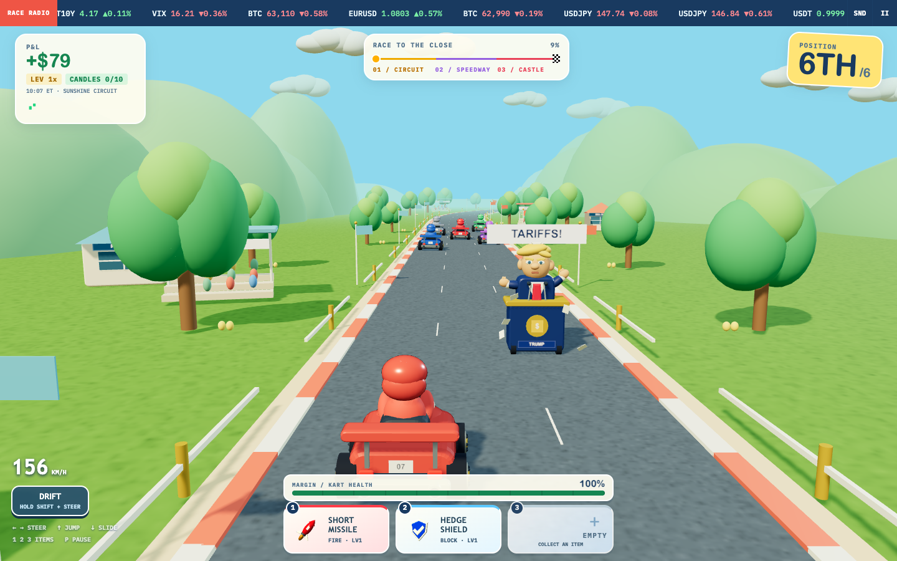

Try the new 3D Grand Prix, or compare the earlier illustrated editions. All retain the trading mechanics and controls.

Rounded 3D karts, glossy paint, animated drivers and wheels, real lighting, shadows, and three modeled environments.
Sunny circuits, colorful karts, crystal speedways, lava castles, and playful arcade styling.
Neon skylines, hovering racers, acid-green instruments, and a moody after-hours atmosphere.